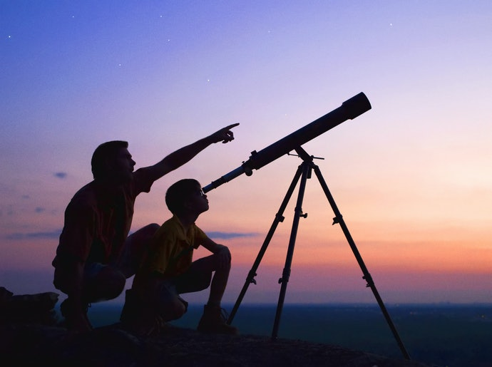

O que é o Mapa Astral?
O Mapa Astral faz parte de uma imensidão de conhecimentos astrológicos e é uma ferramenta poderosíssima de autoconhecimento.
Os povos antigos utilizavam dessa ferramenta de maneira corriqueira e com seriedade. Infelizmente hoje em dia são poucas as pessoas que conhecem a ciência por trás desse conhecimento tão antigo, e menor ainda é o número das que utilizam da ferramenta.
Porém, os felizardos que descobrem a existência do Mapa Astral e têm a oportunidade de fazer a leitura se surpreendem positivamente e começam a utilizá-lo como um guia na tomada de decisões da sua vida em todos os âmbitos (pessoal, familiar, amoroso, profissional...), além de compreender alguns fenômenos que os acometem durante a vida e saber contorná-los da melhor maneira possível.
Diferente do que se é propagado no Senso Comum, o Mapa Astral não trata de adivinhações ou previsões para o futuro. A intenção da leitura do Mapa é de fazer a pessoa conhecer a fundo suas potencialidades para que saiba aproveitá-las da melhor maneira possível ao decorrer da vida.
Essencialmente, o Mapa Astral é uma representação gráfica do céu no momento do nascimento da pessoa, e analisa as relações das forças da natureza que estavam em movimento nesse momento, e como elas afetam naquilo que somos, seguindo a máxima esotérica: "O que está em cima (macrocosmo - o universo) é como o que está embaixo (microcosmo - o homem), e o que está embaixo é como o que está em cima, para formar os milagres de uma mesma coisa."